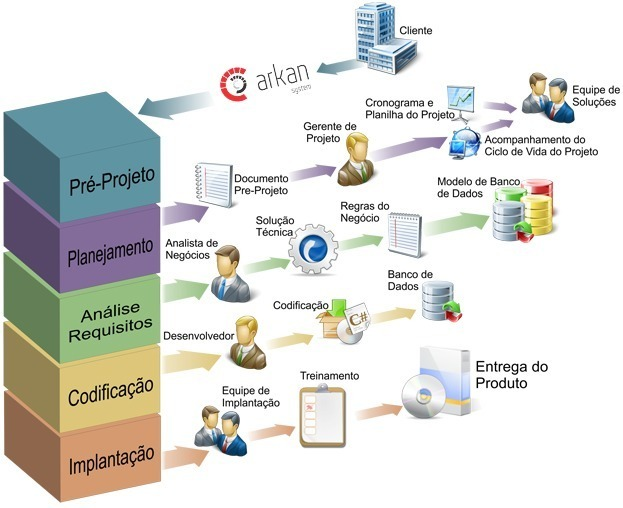

Processos de Desenvolvimento de SoftwareAssim como qualquer produção em industrias, o desenvolvimento de software segue etapas bem definidas partindo de um processo, obtendo desta forma o melhor resultado de forma mais eficiente. Desta maneira, o processo de produção de software segue diretrizes que leva em conta diversos fatores, sendo eles: conjunto de passos, tarefas, eventos e práticas que devem ser seguidas por desenvolvedores de software. Seguinto tais critérios, é importante ressaltar a grande necessidade da organização, no qual, para um software de qualidade é necessário uma equipe que trabalhe em equipe de forma ordenada. Obs: Podendo ser até uma maneira das empresas avaliarem os trabalhos de seus funcionários. Ademais, os processos de desenvolvimento de software é importante para a equipe em um geral, ordenando os desenvolvedores para que possam trabalhar de forma contínua sem fazerem redundâncias por estarem perdidos ou algo do gênero.

Desta forma, pode-se dizer como visto na iamgem acima que o processo de desenvolvimento de software é algo complexo e extenso, devido a grande necessidade de adaptação de caso a caso, no qual, não existe um unico processo ideal e cada vez mais vem evoluindo para se adaptar as necessidades. |